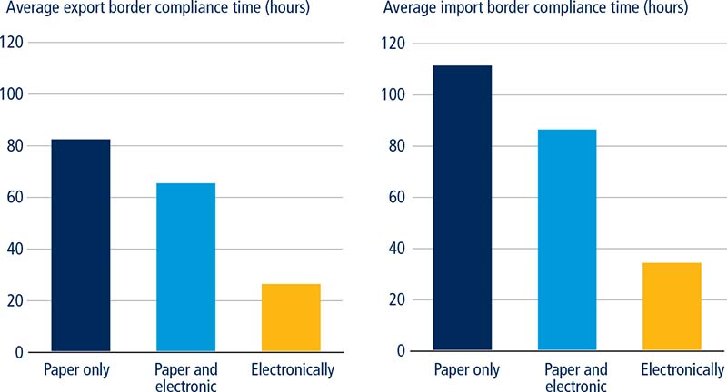
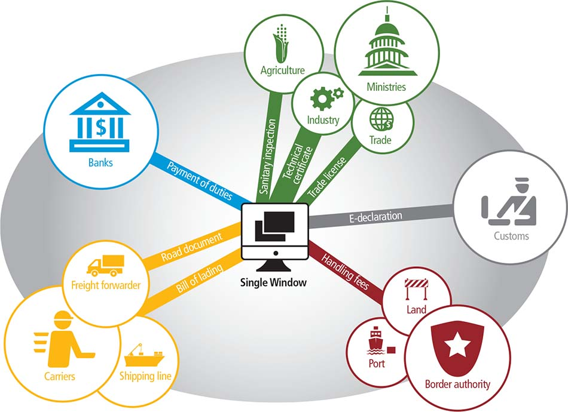
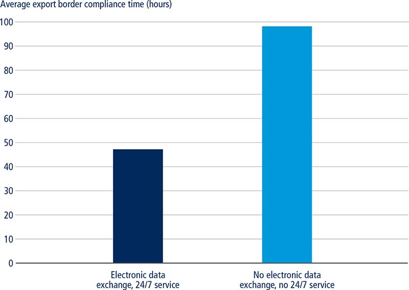
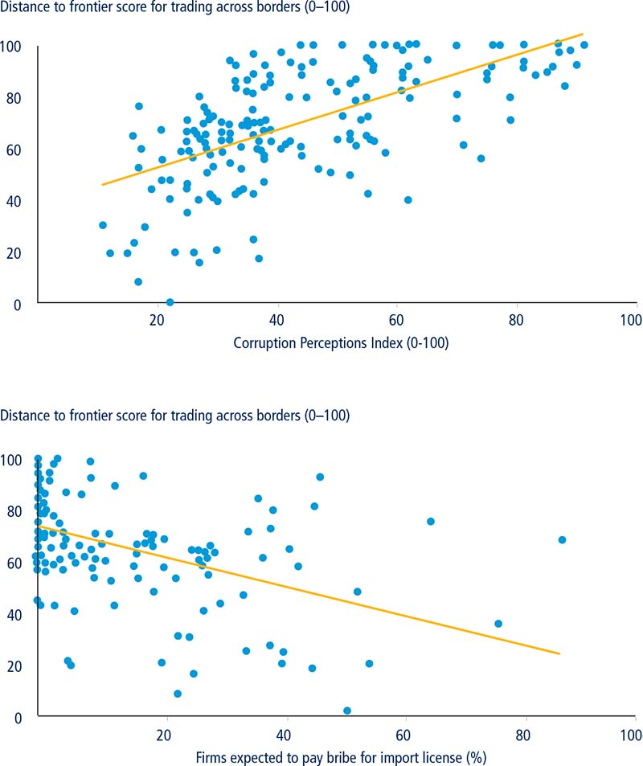

In the era of digital advancement and constant innovation, international trade has greatly benefitted from the development and integration of various electronic interfaces. Aspiring to advance cross-border trade through the use of digital technologies and electronic services, the World Customs Organization (WCO) declared 2016 the Year of Digital Customs. The WCO placed a special emphasis on the coordination of customs activities such as automated customs clearance systems, the implementation of single windows as well as improvement of electronic information exchanges. The goal of these activities is to promote the free flow of information and increase transparency while improving the efficiency of day-to-day trade processes.1 Adding to this effort, the Doing Business trading across borders indicator set measures technological advancement in the area of trade facilitation by collecting data on the time and cost of customs clearance and inspections procedures.2 For the first time this year, the indicators collect data on the use and advancement of single windows around the world. For this purpose, Doing Business defines a single window as a system that receives trade-related information and disseminates it to all the relevant governmental authorities, thus systematically coordinating controls throughout trade processes. The new data on single windows capture the different levels of their integration and digitalization.3
International trade has evolved into a complex network of actors, both within and outside sovereign borders. Trade processes involve not only government authorities and private firms but also customs brokers, commercial banks, vendors, insurance companies and freight forwarders.4 For example, at least nine institutions play a role in the process of exporting coffee from Colombia to the United States. First, the National Institute of Food and Drug Monitoring issues a phytosanitary certificate, which ensures that the coffee meets current sanitary standards. The Colombia Coffee Growers Federation then issues a certificate that attests to the quality of the shipment.5 The Colombian Agricultural Institute then conducts a phytosanitary inspection while the antinarcotics police perform security inspections and customs clears the freight. The exporter must obtain a certificate of origin from the Colombian Chamber of Commerce to comply with the U.S.-Colombia Trade Promotion Agreement. And these are only the steps that must be completed in Colombia. Once the shipment of coffee reaches the United States, it has to go through clearance with the U.S. Customs and Border Protection, Food and Drug Administration and the U.S. Department of Agriculture. Remarkably, the Colombian example is a relatively simple one compared to most other trade-related interactions worldwide. To ensure effective coordination, Colombia developed a single window system for foreign trade—the Ventanilla Única de Comercio Exterior (VUCE)—in the early 2000s. The single window connects 21 public agencies and three private companies (that provide e-signature certificates and legal information) with importers, exporters, customs agents and brokers through an online platform that allows users to request approvals, authorizations and other certifications needed to import and export goods. In addition, tax identification and business registration records are available to the agencies integrated into the system.
▪ Increased national trade digitalization leads to efficiency gains for exporters and importers.
▪ Many single windows have a high level of sophistication and consist of complex networks of regulatory agencies and private actors. This is the case of the Ventanilla Única de Comercio Exterior (VUCE) in Colombia, which connects multiple public agencies and several private companies with exporters, importers, customs agents and brokers.
▪ Sweden was one of the first economies to introduce a national single window in 1989. Since then, the system has evolved from an export statistics platform to a comprehensive trade facilitation tool.
▪ Seaports maintain their competitive edge through the automation and modernization of port infrastructure.
▪ Economies that perform well on the trading across borders indicators also tend to have lower levels of corruption.
In the early 1980s governments and international organizations recognized the need to facilitate the coordination of multiple trade actors to make cross-border trade more cost effective and time efficient. Trade processes gradually began to shift from physical to electronic platforms. One of the first attempts to create a trade electronic platform took place when the United Nations Conference on Trade and Development (UNCTAD) launched an automated customs data management system, the Automated System for Customs Data (ASYCUDA).6 Following a request from the Economic Community of West African States (ECOWAS) in 1981 for technical assistance to collect foreign trade statistics from its member states, UNCTAD developed customs software covering most foreign trade procedures. The focus of the ASYCUDA software is trade facilitation, customs clearance, fiscal control and operational capacity, allowing for the replicability and adaptability of its software in a cost-effective manner. The program, which is implemented free of charge by UNCTAD, currently is installed or being installed in over 90 economies worldwide.
In most cases, ASYCUDA yields positive results for all parties involved. Traders benefit from faster customs formalities and governments report an increase in customs revenue.7 As a result of the introduction of ASYCUDA in the Philippines in 1996 and Sri Lanka in 1994, in the first year of implementation customs revenues increased by more than $215 million and $100 million, respectively.8 Similarly, St. Lucia has benefited from the implementation of ASYCUDA. Customs brokers no longer need to visit multiple customs clearance officers or government agencies to verify and obtain documents as most of the paperwork is verified automatically. By enabling the rapid electronic submission of documents, the overall customs clearance process in St. Lucia has been reduced by 24 hours since implementation. However, not all of the economies that adopted the ASYCUDA program managed to achieve the desired results. The Comoros, for example, introduced the ASYCUDA software in 2010 but it was not used widely by local traders. Electricity cuts and shortages made the system unreliable during regular business hours; the private sector did not experience the expected positive impact from the implementation of the program.
As trade chains have become increasingly globalized, the demand for the coordination of diverse trade actors has continued to rise.9 Many economies have needed to move beyond relatively simple customs electronic data interchange systems, such as ASYCUDA, and toward a more inclusive and sophisticated platform: the single window. The importance of the adoption and integration of single windows in trade has been highlighted by the Bali Agreement of the World Trade Organization (WTO), particularly in the context of developing economies.10
The level of national digitalization, specifically regarding cross-border trade, has been shown to have a significant impact on economic growth.11 Specifically, studies have found that an increase of an economy’s digitalization score by just 10% leads to a 0.75% growth in GDP.12 Research also demonstrates the positive impact of single window systems on increasing the number of exporting firms and on improving international trade flows.13 In Costa Rica, for example, the implementation of streamlined procedures to process export permits through a single window resulted in an increase in the number of exporters by 22.4%.14 Moreover, Doing Business data show that traders in economies with fully operational electronic systems (that allow for export and import customs declarations to be submitted and processed online) spend considerably less time on customs clearance (figure 9.1). Recognizing the positive impact of digitalization, governments and international institutions worldwide have dedicated significant resources to modernizing border compliance processes.
FIGURE 9.1 Trade digitalization leads to efficiency gains for both exporters and importers

Source: Doing Business database.
Note: The relationship is significant at the 1% level after controlling for income per capita. The three categories are: only paper submission of customs declaration is possible; both paper and electronic submissions are in use; and only electronic submission is possible. The sample includes 165 economies.
In 2005, the United Nations Centre for Trade Facilitation and Electronic Business defined a single window as a platform that enables trade stakeholders to submit documentation and other relevant information through a single point of entry in a standardized way in order to complete export, import and transit procedures.15 However, over the past decade, the concept of a single window has expanded to include the entire evolution of electronic systems, including customs automation, trade point portals, electronic data interchange techniques, agency-specific single windows, national single windows, and even regional and global single windows (figure 9.2).16 Due to the multifaceted nature of electronic interchange systems, national governments and international development organizations face numerous obstacles in coordinating the implementation of comprehensive single window platforms. Furthermore, cross-country comparability is complicated by the fact that different economies choose to introduce single windows of varying complexity. Mauritius’ single window, TradeNet, is mostly focused on customs procedures and currently the system only includes the Mauritius Revenue Authority, the Mauritius Port Authority and the Mauritius Chamber of Commerce and Industry.17 In Australia, by contrast, the Customs and Border Protection Service Integrated Cargo System incorporates a broad range of government agencies. The Australian single window connects customs authorities, quarantine authorities and meat producers. These actors work closely throughout the production and trade processes, conducting sanitary inspections and issuing sanitary certificates.18
FIGURE 9.2 Some single windows have a high level of sophistication, encompassing complex networks of regulatory agencies and private actors

Source: Doing Business database.
Single windows may suffer from various institutional and regulatory limitations that stem from conflicting interests related to technical standards, data harmonization and information sharing.19 Border operations, especially those managed by customs authorities, are legislated at the national level. As such, governments and development organizations must first convince different political actors of the need to integrate and modernize trade operations.20 Moreover, because the information technology suppliers of the electronic systems are third parties with complex contractual relationships with governments, change can be slow. Beyond agreeing on the scope of work and bringing together different stakeholders, implementation of a single window can entail a number of organizational complexities. The cost may also vary depending on the parties involved and the level of integration. The single window for exports in Guatemala, for example, was developed by the private sector for less than $1 million, with ongoing operational costs of $1.2 million per year. Users of the Guatemalan single window pay a fee for each transaction in addition to a flat monthly fee. Conversely, the single window in Malaysia, which covers both exports and imports, was established through a public-private partnership and cost about $3.5 million.21
One study shows that among 12 selected trade facilitation mechanisms, single windows generate one of the largest long-term cost savings despite having some of the highest setup and operating costs and an average implementation time of about four years.22 Despite the different uses and applications of single windows, the benefits outweigh the costs of developing a comprehensive framework integrating multiple trade actors. These benefits include improved revenue yields and the adoption of control risk management techniques for governments, as well as enhanced predictability, reduced costs and fewer delays for traders.23 As a result of implementing an electronic data interchange system in the Philippines, customs custody time was reduced to 4–6 hours for “green channel” shipments (from 6–8 days previously).24 Albania also significantly reduced the time spent in customs by adopting a digital risk-based border inspection process. Between 2007 and 2012, this process reduced the days goods spent in Albanian customs by 7% and boosted the value of imports also by 7%.25 The implementation of this electronic facility, based on ASYCUDA modules for risk management, was recognized as a positive reform in the Doing Business 2016 report.
The implementation of a single window in Singapore yielded positive results. Following a recession in the 1980s, Singapore’s government set up a high-level committee to improve economic competitiveness. One of the committee’s recommendations was to increase the use of information technology in trade. Singapore’s single window for trade, TradeNet, one of the first such systems put in place in the world, began operating in 1989 as an electronic data interchange system that allowed the computer-to-computer exchange of structured messages between the government and members of Singapore’s trading community.26 TradeNet now handles more than 30,000 declarations a day, processes 99% of permits in just 10 minutes and receives all monetary collections through interbank transactions.27 Regarding cost, trading firms report savings of between 25% and 30% in document processing.28
Sweden was also one of the first countries to introduce a national single window. The first steps toward the implementation of the Swedish single window were taken in 1989 with the development of the Customs Information System (CIS) by the Swedish customs authorities. During this initial stage, the CIS was an online platform that recorded export statistics electronically to the statistics bureau. The system gradually evolved from an export data exchange to a comprehensive single window that encompasses exports, imports and transit goods’ procedures. Currently, the Swedish single window connects customs not only to the statistics bureau but also to other important international trade actors.29 Clearing goods in Sweden is easy and straightforward. The trader or representative submits the customs declaration online; even though paper copies are still allowed, they are rarely used. Customs processes the relevant information and if a license or a permit from other agencies is required it is requested automatically through the single window.30 Even though the use of the online system is not compulsory, 94% of customs declarations are submitted electronically, and approximately 12,000 companies and 7,000 citizens use it.31 The platform operates 24 hours a day, seven days a week and is free of charge.
Over time single windows have moved beyond national boundaries, encompassing entire geographic regions. In synchronization with national single window efforts, electronically integrated regional systems are on the rise. The Association of South East Asian Nations (ASEAN)32 Single Window (ASW) initiative, which was adopted and endorsed during the Ninth ASEAN Summit in 2003, aims to integrate the national single windows of ASEAN countries by allowing the electronic exchange of customs information and expediting cargo clearance. The regional single window is expected to reduce the overall cost of trading by 8%, with the largest savings arising from a reduction in documentation dispatch costs.33 The implementation of the ASW is being carried out gradually; member states are currently in the process of implementing their respective domestic ratifications. A significant challenge has been the fact that most ASEAN member states have their own customs regimes and relevant legislation in place, which can be difficult to reconcile with new regional legislation.
Efforts toward electronic regional integration are also underway in Latin America and the Caribbean. The Inter-American Network of International Trade Single Windows (Red VUCE) initiative was launched in 2011 as a forum to promote cooperation and peer-to-peer learning among national single windows in Latin America and the Caribbean, with the goal of reducing the time and cost of trading in the region.34 During its fifth meeting in 2014, Red VUCE representatives agreed to launch a pilot project that will allow interoperability of single windows in the region with the primary objective of eliminating paper copies of documents and interconnecting the single windows of Chile, Colombia, Mexico and Peru, the four founding members of the Pacific Alliance, by 2016.35
Economies that trade through seaports maintain their competitive edge not only through the use of electronic services and single windows but also through the automation and modernization of port infrastructure (box 9.1).
BOX 9.1 Improving trade efficiency through port and customs automation
The ability of ports to ensure timely cargo transfers is a vital dimension of their competitiveness. Efficient ports are not only technologically advanced—using robots and automated container handling—but also employ digital platforms, such as port community systems, to ensure the smooth and reliable transfer of information between all members of the seaport network. Efficient ports generate many economic benefits, including increased trade volume, lower trade costs, and higher employment and foreign investment. Port quality impacts entire supply chains and even the economies of nearby cities.
Studies show the importance of port efficiency for trade facilitation and regional development. According to one study, port efficiency is a crucial determinant of shipping costs: improving port efficiency from the 25th to the 75th percentile reduces shipping costs by around 12%. Furthermore, reductions in inefficiencies associated with transport costs from the 25th to 75th percentile imply an increase in bilateral trade of around 25%.a Another study, on the economic impact of the port cluster in Rotterdam, suggests that the value added of the port accounts for approximately 10% of regional GDP.b The Le Havre/Rouen port cluster had an even higher share of regional GDP (21%).c Going beyond port automation, data show that, on average, economies with full-time automated processing systems for customs agencies—as well as electronic data exchange platforms—take significantly less time to move exported goods compared to ones where full-time automation is not implemented (see figure). Port and customs automation make the exporting process more efficient. Moreover, data suggest that around-the-clock automated processing systems are a key factor for making border compliance more efficient.
Customs automation at ports/borders allows exporters to save time when dealing with trade logistics

Sources: Doing Business database; OECD 2015 database.
Note: The sample consists of 75 economies. The relationship is significant at the 1% level after controlling for income per capita.
Automation improves reliability, predictability, safety and competitiveness of operations. Ports are land-intensive; automated cranes and vehicles in ports improve the productivity of stacking crane interchange zones, which allows for more efficient land allocation and use. Furthermore, modern automated machinery is fast, economical and low-maintenance and it helps to avoid collisions and other physical damage. Better technology and automation also improves worker safety.c In April 2015 the Patrick terminal at Sydney’s Port Botany optimized the use of AutoStrad, a single piece of equipment that combines stacking and transportation capabilities without any human engagement. This technology has made the port safer, more predictable and efficient, ultimately benefiting both users and customers.d
In the global trade logistics environment, where the number of containers is rapidly increasing due to higher international trade volumes, competition among ports to dominate the container market continues to intensify. Ports are complex constructions and changes are not easy to implement. Ports are communities composed of numerous players, both public and private.e Usually port authorities and customs constitute the core of these communities. Other entities include shipping lines, freight forwarders, customs brokers, importers and exporters, all involved in conducting trade.
Location is no longer an important differentiator among ports. Now the services ports offer and the added economic value ports provide determine their competitive advantage.f Port efficiency is an integral prerequisite for surviving in the competitive world of trade. Container automation and port community systems can be leveraged to improve efficiency. Given that information sharing is a key element within the port community, information technology capabilities—and port community systems in particular—serve as important differentiators among ports. But container automation can be costly and cause workforce optimization and therefore its implementation should be carefully weighed. Yet port community systems generate multiple first-hand benefits, including reduced paperwork, better information quality and reliability and safeguarded access to information by all members of the port community.
a. Clark, Dollar and Micco 2004.
b. Port cluster means port with multiple functions.
c. OECD 2011a.
d. Sydney Morning Herald 2015.
e. Wrigley, Wagenaar and Clarke 1994.
f. van Baalen, Zuidwijk and van Nunen 2008.
Research shows a negative relationship between corruption and investment, which constrains economic growth.36 Corruption is particularly damaging for international trade.37 Through advocating for adherence to international trade laws, international organizations have been actively combating corruption in the area of trade.38 Intra-regional trade, especially in developing economies, remains highly vulnerable to fraudulent and corrupt practices. In economies with weak institutions and inefficient governments, the negative effects of corruption on growth are even more pronounced.39 Recent studies on intra-regional trade in Africa demonstrate that corruption coupled with weak institutional frameworks poses major obstacles to the development of trade flows within the Economic and Monetary Community of Central Africa.40 Corruption can alter natural trade flows and cause various market distortions by, for example, causing substantial delays in the delivery of goods. To extract bribes, corrupt civil servants create additional interruptions and constraints in an otherwise well-functioning system.41 The literature suggests that even when businesses pay bribes, they still face high time delays and experience greater capital costs.42
In the realm of international trade, and particularly in customs clearance procedures, corruption can flourish because customs officials control something that firms greatly value—access to international markets.43 Research shows that customs officials are particularly prone to accepting bribes and are more likely to engage in corruption compared to other sectors of the economy.44 Import and export processes are equally affected by corruption. Customs officials can fraudulently overlook import regulations and exonerate goods from inspections while importing, or abuse their roles of gatekeepers during export procedures.45
Doing Business data show that economies that perform well on the trading across borders indicators tend to have lower levels of corruption (figure 9.3). For example, there is a strong positive association between the economies’ distance to frontier score in the trading across borders indicators and their score in Transparency International’s Corruption Perceptions Index.46 Similarly, the distance to frontier score on the trading across borders indicators is strongly and negatively correlated with the percentage of firms that are expected to give gifts to obtain an import license. The distance to frontier score tends to be higher in economies where fewer firms need to offer a bribe to get things done. Performance on the trading across borders indicators is also strongly and significantly correlated with the Worldwide Governance Indicators’ rule of law and control of corruption variables.47
FIGURE 9.3 A good performance on the trading across borders indicators is associated with lower levels of corruption

Sources: Doing Business database; Enterprise Surveys database (http://www.enterprisesurveys.org), World Bank; Transparency International data (https://www.transparency.org/cpi2015/results).
Note: The results are significant at the 1% level after controlling for income per capita. A higher score on Transparency International’s Corruption Perceptions Index indicates a lower level of perceived corruption. Data for the Corruption Perceptions Index are for 2015. The samples include 146 economies covered by both Transparency International and Doing Business and 121 economies covered by the Enterprise Surveys and Doing Business.
Economies worldwide have spent decades trying to eradicate corruption in international trade, with varying levels of success. Many East African economies are signatories of the World Customs Organization (WCO) Arusha Declaration, which is a recognized focal tool of an effective approach to tackling corruption and increasing integrity in customs for WCO members. Nevertheless, corruption and dominance of non-official fees and charges remain an important challenge in the region. To enhance integrity in East African economies, Kenya, for example, created an anti-corruption commission tasked with implementing good practices proposed by the Revised Arusha Declaration and the WCO Integrity Development Guide and Compendium of Integrity Best Practices. The Arusha Declaration explicitly recognizes the automation of trade processes, including electronic data interchange, as powerful anti-corruption tools.48
Increased trade digitalization, which minimizes human interactions, creates fewer opportunities for bribery and fraud. The Philippines successfully fought corruption in its customs services by adopting systems that limit in-person interactions and by imposing heavy penalties on corrupt officials. Its approach relied on the use of modern technology to reengineer the customs services operating environment.49 As a result of the anti-corruption reforms, about 70% of imports to the Philippines are now processed through the “green channel” within just two hours.50 Similarly, single window systems—which limit the monopoly power of customs agents—can be implemented to deter corruption in customs services.51 The automation and digitalization of administrative systems largely eliminates the monopolistic power of customs officials.52 Similarly to the case of the Philippines, prior to 2003 the customs department as well as other administrations and agencies in Georgia faced a rampant corruption problem. A key step to tackling corruption in the Georgian customs was the introduction of a one-stop shop system that reduced face-to-face interactions between entrepreneurs and customs officials.53
The introduction of computerized solutions for processing customs documents—and the general automation of customs clearance—leaves little to the discretion of customs officials, thereby reducing opportunities for corruption.54 However, despite myriad efforts to implement good practices, corruption is still prevalent in many customs departments in Sub-Saharan Africa. In economies where anti-corruption reforms have failed, customs officials are often torn between bureaucratic norms and the expectations of their networks and surroundings. In some African economies, a kinship-based social organization that combines moral obligation and attachment is strong, making corruption more present and acceptable.55
Mozambique launched an extensive customs reform program in 1995 to modernize the customs department and tackle corruption. Customs operations did not have any substantial information technology support before the reform was implemented. Despite considerable progress, Mozambique still needs to develop further its existing information technology infrastructure to deal effectively with corruption and smuggling. Corruption is also a challenge in the customs administration in Uganda. The Uganda Revenue Authority has been implementing various solutions to fight corruption, such as requiring officials to declare their assets, increasing salaries and providing training on integrity.56 Uganda recently introduced a modernized version of the ASYCUDA World system, but its impact on fighting corruption remains to be seen.
Implementing a single window is not an easy undertaking. The complex process requires extensive cooperation and coordination among multiple players, and it can take several years for new electronic platforms to become fully operational and used by the majority of traders. However, the long-term benefits substantially outweigh the costs and the actual integration of single windows or similar systems can be done in phases. Most economies start with relatively simple electronic exchange solutions and progressively make systemic upgrades and expansions. Port automation and modernization is an important milestone that economies can work toward to improve their competitiveness.
The integration of single windows into international trade processes and improved port automation can aid economies in combating corruption. Corruption remains a major problem in international trade. It perpetuates delays and inefficiencies, increases costs and ultimately has a negative impact on economic growth and development. Customs departments are especially prone to corruption, as customs officials often hold important decision-making powers in the international trade process. The digitalization of customs procedures is an efficient tool for tackling corruption; it is most effective when integrated into larger anti-corruption campaigns. Modern information technology infrastructure not only reduces opportunities for corruption but also has a generally positive impact on the entire trade process, thereby benefitting economic development overall.
This case study was written by Cécile Ferro, Marilyne Florence Mafoboue Youbi, Dorina Peteva Georgieva, Valentina Saltane and Inés Zabalbeitia Múgica.
1. World Customs Organization 2015.
2. WTO 1998a. Trade facilitation is defined by the WTO as “The simplification and harmonization of international trade procedures, where trade procedures are the activities, practices, and formalities involved in collecting, presenting, communicating, and processing data and other information required for the movement of goods in international trade.”
3. In Doing Business 2017 the trading across borders indicators collect data on the status of implementation of the following components of single window systems in 190 economies: physical one-stop shop; customs electronic data interchange system; port or border integration; other governmental agencies integration; national single window; regional single window.
4. UNCTAD, “Saving one hundred billion dollars annually by the year 2000.” United Nations International Symposium on Trade Efficiency, Columbus, Ohio, Fact Sheet # 5. 1994.
5. See the website of Colombia’s Superintendencia de Industria y Comercio available at http://www.sic.gov.co/drupal/.
6. UNCTAD, “The ASYCUDA Programme.”
7. For more information on the Automated System for Customs Data (ASYCUDA), see its website at http://www.asycuda.org/.
8. WTO 1998b.
9. Elms and Low 2013.
10. WTO 2013a.
11. Wilson, Mann and Otsuki 2003. Engman 2005.
12. Sabbagh and others 2013. Booz & Company’s Digitization Index is a composite score that calculates the level of an economy’s digitization using 23 indicators to measure six attributes: ubiquity, affordability, reliability, speed, usability and speed. The Digitization Index measures an economy’s level of digitization on a scale of 0 to 100, with 100 signifying the most advanced, to identify its distinct stage of digital development: constrained, emerging, transitional or advanced.
13. Sá Porto, Morini and Canuto 2015.
14. Carballo, Schaur and Volpe Martincus 2015.
15. UN/CEFACT 2005.
16. Tsen 2011.
17. Tsen 2011.
18. World Bank 2015c.
19. Macedo and Scorza 2013.
20. Grainger 2008.
21. UNECE 2005. The costs of establishing a single window can vary greatly depending on the information technology interface, the level of sophistication, the number of adopted modules and overall trade volumes.
22. Duval 2006; Moise, Orliac and Minor 2011. The Duval 2006 study lists the following 12 common trade facilitation measures: alignment of trade documents according to the UN Layout Key for trade documents; online publication of relevant trade data; establishment of enquiry points and single national focal points for trade regulations and other trade facilitation issues; establishment of a national trade facilitation committee; provision of advance rulings; establishment of an effective appeal procedure for customs; establishment of a single window system; establishment and systematic use of pre-arrival clearance mechanism; implementation of modern risk management systems; establishment and wider use of audit-based customs; expedited clearance of goods and expedited procedures for express shipments and qualified traders/companies.
23. UNECE 2005.
24. Maniego 1999. “Green channel” clearance of goods refers to the process of customs clearance without routine examination of the goods. “Green channel” status is provided only to certain traders and products that meet the eligibility requirements set by customs authorities. Eligibility requirements may include, but are not limited to: government-approved list of companies and products, top importers in terms of duty payment and traders who have an impeccable record. Moving goods through the “green channel” that are not part of an economy’s list of “green channel” products constitutes a customs offense that carries administrative and in some cases criminal liability.
25. Fernandes, Hillberry and Mendoza Alcantara 2015.
26. World Bank 2013a.
27. Neo and Leong 1994.
28. OECD 2009.
29. The Swedish single window also connects customs to the National Board of Trade, the Swedish Board of Agriculture, the National Inspectorate of Strategic Products, the National Board of Taxation, the National Debt Office, the Swedish police, Norwegian customs, Russian customs and the European Commission.
30. See the website of the Swedish customs service at http://www.tullverket.se/.
31. UNECE 2005.
32. The members of the Association of Southeast Asian Nations are: Brunei Darussalam, Cambodia, Indonesia, the Lao People’s Democratic Republic, Malaysia, Myanmar, the Philippines, Singapore, Thailand, and Vietnam.
33. USAID 2012.
34. The members of Red VUCE (Inter-American Network of International Trade Single Windows) are: Argentina, The Bahamas, Barbados, Belize, Bolivia, Brazil, Chile, Colombia, Costa Rica, Dominican Republic, Ecuador, El Salvador, Guatemala, Guyana, Haiti, Honduras, Jamaica, Mexico, Nicaragua, Panama, Paraguay, Peru, Suriname, Trinidad and Tobago, Uruguay and República Bolivariana de Venezuela.
35. Red VUCE 2014. Inter-American Network of International Trade Single Windows meeting in Cusco, Peru.
36. Mauro 1995.
37. Dreher and Herzfeld 2005.
38. Parisi and Rinoldi 2004.
39. Meon and Sekkat 2003 and Lopez-Claros 2015.
40. Avom and Fankem 2014. The members of the Central African Economic and Monetary Community (CEMAC) are Cameroon, the Central African Republic, Chad, Equatorial Guinea, Gabon and the Republic of Congo.
41. Myrdal 1968.
42. Kaufmann and Wei 2000 and Freund, Hallward-Driemeier and Rijkers 2014.
43. Dutt and Traca 2010.
44. Rose-Ackerman 1997.
45. Dutt and Traca 2010.
46. A higher score on the Corruption Perceptions Index indicates a lower level of perceived corruption.
47. World Bank 2015c. The rule of law variable “reflects perceptions of the extent to which agents have confidence in and abide by the rules of society, and in particular the quality of contract enforcement, property rights, the police, and the courts, as well as the likelihood of crime and violence.” The control of corruption variable “reflects perceptions of the extent to which public power is exercised for private gain, including both petty and grand forms of corruption, as well as “capture” of the state by elites and private interests.”
48. World Customs Organization 1998.
49. Parayno 2013.
50. Parayno 2004.
51. Ndonga 2013.
52. McLinden 2005.
53. World Bank 2012b.
54. Crotty 2010.
55. Fjeldstad 2009.
56. de Wulf and Sokol 2004.